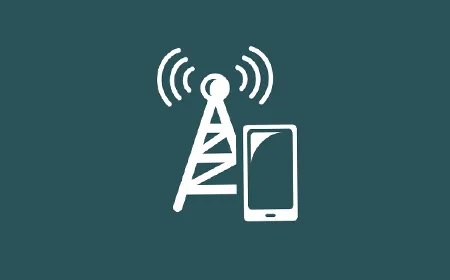

FREE HOSTING CONTROL
It is a modern wireless technology for connecting computers to a network or connecting to the Internet.
It is through this technology that the Internet is mobile to the user, either in the confines of a room or
offers free movement around the world. The technology simultaneously dozens of users in a network
creates conditions for working. At this time, the data transfer rate for the last subscriber is 108 Mbit/s.
Owners of laptops, mobile computers, web cameras provided with a special module supporting the IEEE 802.11 standard
They can use Wi-Fi connection.

Main Features
1 You've got lots of options to choose from, and I've spent
2 He past few years regularly testing them out to find the best
3 Of the bunch. For the previous two years, I ran those tests
4 Out of my own home (read more about how we test Wi-Fi routers).
Latest information
- Mobile and dedicated hotspots are becoming a more popular way of connecting safely on the go.
Two common hotspot devices are your smartphone and a jetpack. Most any smartphone or tablet today can
be used as a temporary hotspot and is a great option if you occasionally need it.
- It’s easy to use and doesn’t require buying extra devices, but it can zap your
battery life and data pretty fast.
Wifi speed
The type of Internet connection you are currently using may play a role in Internet speeds.
Examples of Internet connections include 3G wireless or 4G wireless, mobile, hotspots, modem or dial-up,
broadband, DSL, cable, satellite, and more.
sdfsdwdd